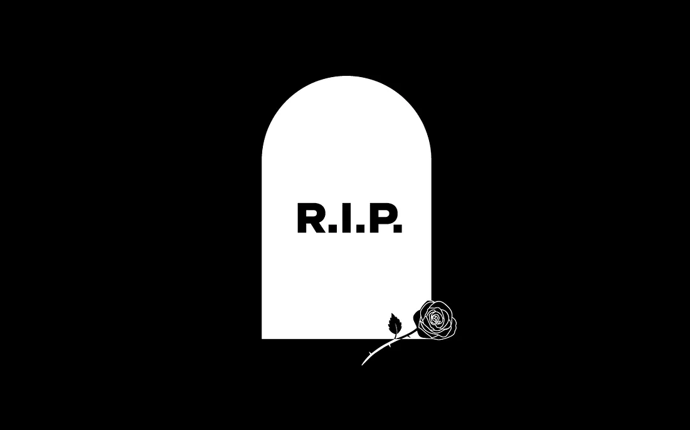

Here is a story of my journey to my chosen career, please have a read through...
Acceptance is the key
Just after my graduation, I was struggling and a bit confused about my career choice, I fully tried my hands in development (I’m not bad at coding but I was not a good fit for it) and as they say that you will always finds a way out. I had so many questions and needed someone to answer them for me. 
A longgg break in career
I almost gave up and trying my luck everywhere, juggling with several courses for interviews and multiple competitive exams, but at the end I figured it out that all of this was not meant for me and also all of the days I spent was never a waste as I learnt a lot from all of the situations.
Bringing my dead career back to live
Then, one of my friend introduced me with UX Designing and as they say better late than never. So, then I decided to become a UI/UX designer but I needed to figure out everything, I don’t know from where to start, I’ve always been interested in design but had never pursued it as a career.
So first thing first, I did some research and started with reading books and articles about UI/UX design and understanding what it was all about. I learned about user research, wireframing, and prototyping. I realized that UI/UX design was not just about making something look pretty but also about solving problems and creating a great user experience.
Next, I enrolled myself into Google User Experience design Course I understood the tools
and
techniques used in UI/UX design, I took classes on user research, wireframing, and
prototyping,
which helped me to understand how to create wireframes and user flows that are easy to
understand
and use.
Then I build my portfolio worked on personal projects, such as redesigning websites and
apps
and
added them to my portfolio.
In summary, UI/UX journey or any other career path can be challenging but It’s all about
taking the first steps.🙂
Wohoo!! Thank you for reading. ❤️❤️